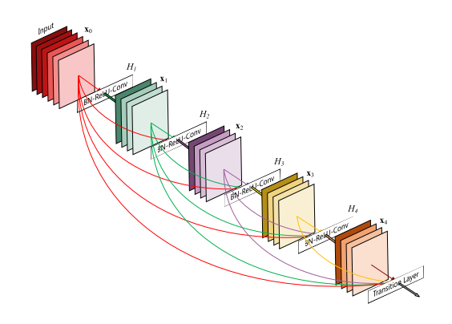
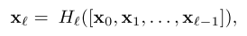
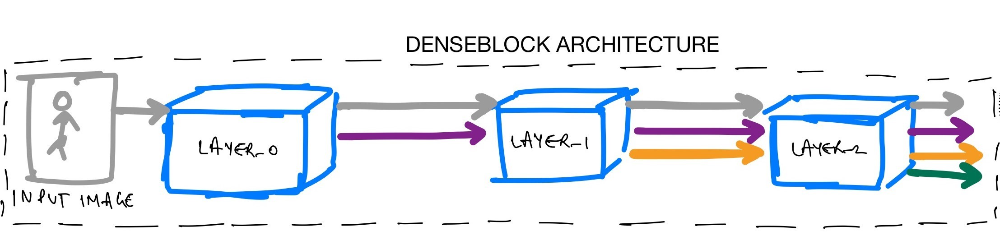

DenseNet Architecture Explained with PyTorch Implementation from TorchVision
Densely Connected Convolutional Networks
In this blog post, we introduce dense blocks, transition layers and look at the TorchVision implementation of DenseNet step-by-step.
1 Introduction
In this post today, we will be looking at DenseNet architecture from the research paper Densely Connected Convolutional Networks.
The overall agenda is to: - Understand what DenseNet architecture is - Introduce dense blocks, transition layers and look at a single dense block in more detail - Understand step-by-step the TorchVision implementation of DenseNet
2 DenseNet Architecture Introduction
In a standard Convolutional Neural Network, we have an input image, that is then passed through the network to get an output predicted label in a way where the forward pass is pretty straightforward as shown in the image below:

Each convolutional layer except the first one (which takes in the input image), takes in the output of the previous convolutional layer and produces an output feature map that is then passed to next convolutional layer. For L layers, there are L direct connections - one between each layer and its subsequent layer.
The DenseNet architecture is all about modifying this standard CNN architecture like so:

In a DenseNet architecture, each layer is connected to every other layer, hence the name Densely Connected Convolutional Network. For L layers, there are L(L+1)/2 direct connections. For each layer, the feature maps of all the preceding layers are used as inputs, and its own feature maps are used as input for each subsequent layers.
This is really it, as simple as this may sound, DenseNets essentially conect every layer to every other layer. This is the main idea that is extremely powerful. The input of a layer inside DenseNet is the concatenation of feature maps from previous layers.
From the paper: > DenseNets have several compelling advantages: they alleviate the vanishing-gradient problem, strengthen feature propagation, encourage feature reuse, and substantially reduce the number of parameters.
3 But is feature concatenation possible?
Okay, so then, now we know the input of Lth layer are the feature maps from [L1, L1, L1.. L-1th] concatenated but is this concatenation possible?
At this point in time, I want you to think about whether we can concat the features from the first layer of a DenseNet with the last layer of the DenseNet? If we can, why? If we can’t, what do we need to do to make this possible?
This is a good time to take a minute and think about this question.
So, here’s what I think - it would not be possible to concatenate the feature maps if the size of feature maps is different. So, to be able to perform the concatenation operation, we need to make sure that the size of the feature maps that we are concatenating is the same. Right?
But we can’t just keep the feature maps the same size throughout the network - an essential part of concvolutional networks is down-sampling layers that change the size of feature maps. For example, look at the VGG architecture below:

The input of shape 224x224x3 is downsampled to 7x7x512 towards the end of the network.
To facilitate both down-sampling in the architecture and feature concatenation - the authors divided the network into multiple densely connected dense blocks. Inside the dense blocks, the feature map size remains the same.

Dividing the network into densely connected blocks solves the problem that we discussed above.
Now, the Convolution + Pooling operations outside the dense blocks can perform the downsampling operation and inside the dense block we can make sure that the size of the feature maps is the same to be able to perform feature concatenation.
3.1 Transition Layers
The authors refer to the layers between the dense blocks as transition layers which do the convolution and pooling.
From the paper, we know that the transition layers used in the DenseNet architecture consist of a batch-norm layer, 1x1 convolution followed by a 2x2 average pooling layer.
Given that the transition layers are pretty easy, let’s quickly implement them here:
class _Transition(nn.Sequential):
def __init__(self, num_input_features, num_output_features):
super(_Transition, self).__init__()
self.add_module('norm', nn.BatchNorm2d(num_input_features))
self.add_module('relu', nn.ReLU(inplace=True))
self.add_module('conv', nn.Conv2d(num_input_features, num_output_features,
kernel_size=1, stride=1, bias=False))
self.add_module('pool', nn.AvgPool2d(kernel_size=2, stride=2))Essentially the 1x1 conv performs the downsampling from num_input_features to num_output_features.
4 Dense connectivity
Let’s consider a network with L layers, each of which performs a non-linear transformation HL. The output of the Lth layer of the network is denoted as xL and the input image is represented as x0.
We know that traditional feed-forward netowrks connect the output of the Lth layer to L+1th layer. And the skip connection can be represented as:

In DenseNet architecture, the dense connectivity can be represented as:

where [x0, x1, x2..] represents concatenation of the feature maps produced by [0,1,.. Lth] layers.
4.1 Inside a single DenseBlock
Now that we understand that a DenseNet architecture is divided into multiple dense blocks, let’s look at a single dense block in a little more detail. Essentially, we know, that inside a dense block, each layer is connected to every other layer and the feature map size remains the same.

Let’s try and understand what’s really going on inside a dense block. We have some gray input features that are then passed to LAYER_0. The LAYER_0 performs a non-linear transformation to add purple features to the gray features. These are then used as input to LAYER_1 which performs a non-linear transformation to also add orange features to the gray and purple ones. And so on until the final output for this 3 layer denseblock is a concatenation of gray, purple, orange and green features.
So, in a dense block, each layer adds some features on top of the existing feature maps.
Therefore, as you can see the size of the feature map grows after a pass through each dense layer and the new features are concatenated to the existing features. One can think of the features as a global state of the network and each layer adds K features on top to the global state.
This parameter K is referred to as growth rate of the network.
5 DenseNet Architecture as a collection of DenseBlocks
We already know by now from fig-4, that DenseNets are divided into multiple DenseBlocks.
The various architectures of DenseNets have been summarized in the paper.

Each architecture consists of four DenseBlocks with varying number of layers. For example, the DenseNet-121 has [6,12,24,16] layers in the four dense blocks whereas DenseNet-169 has [6, 12, 32, 32] layers.
We can see that the first part of the DenseNet architecture consists of a 7x7 stride 2 Conv Layer followed by a 3x3 stride-2 MaxPooling layer. And the fourth dense block is followed by a Classification Layer that accepts the feature maps of all layers of the network to perform the classification.
Also, the convolution operations inside each of the architectures are the Bottle Neck layers. What this means is that the 1x1 conv reduces the number of channels in the input and 3x3 conv performs the convolution operation on the transformed version of the input with reduced number of channels rather than the input.
5.1 Bottleneck Layers
By now, we know that each layer produces K feature maps which are then concatenated to previous feature maps. Therefore, the number of inputs are quite high especially for later layers in the network.
This has huge computational requirements and to make it more efficient, the authors decided to utilize Bottleneck layers. From the paper: > 1×1 convolution can be introduced as bottleneck layer before each 3×3 convolution to reduce the number of input feature-maps, and thus to improve computational efficiency. In our experiments, we let each 1×1 convolution produce 4k feature-maps.
We know K refers to the growth rate, so what the authors have finalized on is for 1x1 conv to first produce 4*K feature maps and then perform 3x3 conv on these 4*k size feature maps.
6 DenseNet Implementation
We are now ready and have all the building blocks to implement DenseNet in PyTorch.
6.1 DenseLayer Implementation
The first thing we need is to implement the dense layer inside a dense block.
class _DenseLayer(nn.Module):
def __init__(self, num_input_features, growth_rate, bn_size, drop_rate, memory_efficient=False):
super(_DenseLayer, self).__init__()
self.add_module('norm1', nn.BatchNorm2d(num_input_features)),
self.add_module('relu1', nn.ReLU(inplace=True)),
self.add_module('conv1', nn.Conv2d(num_input_features, bn_size *
growth_rate, kernel_size=1, stride=1,
bias=False)),
self.add_module('norm2', nn.BatchNorm2d(bn_size * growth_rate)),
self.add_module('relu2', nn.ReLU(inplace=True)),
self.add_module('conv2', nn.Conv2d(bn_size * growth_rate, growth_rate,
kernel_size=3, stride=1, padding=1,
bias=False)),
self.drop_rate = float(drop_rate)
self.memory_efficient = memory_efficient
def bn_function(self, inputs):
"Bottleneck function"
# type: (List[Tensor]) -> Tensor
concated_features = torch.cat(inputs, 1)
bottleneck_output = self.conv1(self.relu1(self.norm1(concated_features))) # noqa: T484
return bottleneck_output
def forward(self, input): # noqa: F811
if isinstance(input, Tensor):
prev_features = [input]
else:
prev_features = input
bottleneck_output = self.bn_function(prev_features)
new_features = self.conv2(self.relu2(self.norm2(bottleneck_output)))
if self.drop_rate > 0:
new_features = F.dropout(new_features, p=self.drop_rate,
training=self.training)
return new_featuresA DenseLayer accepts an input, concatenates the input together and performs bn_function on these feature maps to get bottleneck_output. This is done for computational efficiency. Finally, the convolution operation is performed to get new_features which are of size K or growth_rate.
It should now be easy to map the above implementation with fig-5 shown below for reference again:
Let’s say the above is an implementation of LAYER_2. First, LAYER_2 accepts the gray, purple, orange feature maps and concatenates them. Next, the LAYER_2 performs a bottleneck operation to create bottleneck_output for computational efficiency. Finally, the layer performs the HL operation as in eq-2 to generate new_features. These new_features are the green features as in fig-5.
Great! So far we have successfully implemented Transition and Dense layers.
6.2 DenseBlock Implementation
Now, we are ready to implement the DenseBlock which consists of multiple such DenseLayers.
class _DenseBlock(nn.ModuleDict):
_version = 2
def __init__(self, num_layers, num_input_features, bn_size, growth_rate, drop_rate, memory_efficient=False):
super(_DenseBlock, self).__init__()
for i in range(num_layers):
layer = _DenseLayer(
num_input_features + i * growth_rate,
growth_rate=growth_rate,
bn_size=bn_size,
drop_rate=drop_rate,
memory_efficient=memory_efficient,
)
self.add_module('denselayer%d' % (i + 1), layer)
def forward(self, init_features):
features = [init_features]
for name, layer in self.items():
new_features = layer(features)
features.append(new_features)
return torch.cat(features, 1)Let’s map the implementation of this DenseBlock with fig-5 again. Let’s say we pass the number of layers num_layers as 3 to create fig-5 block. In this case, let’s imagine that the num_input_features in gray in the figure is 64. We already know that the authors choose the bottleneck size bn_size for 1x1 conv to be 4. Let’s consider the growth_rate is 32 (same for all networks as in the paper).
Great, so the first layer LAYER_0 accepts 64 num_input_features and outputs extra 32 features. Excellent. Now, LAYER_1 accepts the 96 features num_input_features + 1 * growth rate and outputs extra 32 features again. Finally, LAYER_2 accepts 128 features num_input_features + 2 * growth rate and adds the 32 green features on top with are then concatenated to existing features and returned by the DenseBlock.
At this stage, it should be really easy for you to map the implementation of dense block with fig-5.
7 DenseNet Architecture Implementation
Finally, we are now ready to implement the DenseNet architecture as we have already implemented the DenseLayer and DenseBlock.
class DenseNet(nn.Module):
def __init__(self, growth_rate=32, block_config=(6, 12, 24, 16),
num_init_features=64, bn_size=4, drop_rate=0, num_classes=1000, memory_efficient=False):
super(DenseNet, self).__init__()
# Convolution and pooling part from table-1
self.features = nn.Sequential(OrderedDict([
('conv0', nn.Conv2d(3, num_init_features, kernel_size=7, stride=2,
padding=3, bias=False)),
('norm0', nn.BatchNorm2d(num_init_features)),
('relu0', nn.ReLU(inplace=True)),
('pool0', nn.MaxPool2d(kernel_size=3, stride=2, padding=1)),
]))
# Add multiple denseblocks based on config
# for densenet-121 config: [6,12,24,16]
num_features = num_init_features
for i, num_layers in enumerate(block_config):
block = _DenseBlock(
num_layers=num_layers,
num_input_features=num_features,
bn_size=bn_size,
growth_rate=growth_rate,
drop_rate=drop_rate,
memory_efficient=memory_efficient
)
self.features.add_module('denseblock%d' % (i + 1), block)
num_features = num_features + num_layers * growth_rate
if i != len(block_config) - 1:
# add transition layer between denseblocks to
# downsample
trans = _Transition(num_input_features=num_features,
num_output_features=num_features // 2)
self.features.add_module('transition%d' % (i + 1), trans)
num_features = num_features // 2
# Final batch norm
self.features.add_module('norm5', nn.BatchNorm2d(num_features))
# Linear layer
self.classifier = nn.Linear(num_features, num_classes)
# Official init from torch repo.
for m in self.modules():
if isinstance(m, nn.Conv2d):
nn.init.kaiming_normal_(m.weight)
elif isinstance(m, nn.BatchNorm2d):
nn.init.constant_(m.weight, 1)
nn.init.constant_(m.bias, 0)
elif isinstance(m, nn.Linear):
nn.init.constant_(m.bias, 0)
def forward(self, x):
features = self.features(x)
out = F.relu(features, inplace=True)
out = F.adaptive_avg_pool2d(out, (1, 1))
out = torch.flatten(out, 1)
out = self.classifier(out)
return outLet’s use the above implementation to create densenet-121 architecture.
def _densenet(arch, growth_rate, block_config, num_init_features, pretrained, progress,
**kwargs):
model = DenseNet(growth_rate, block_config, num_init_features, **kwargs)
return model
def densenet121(pretrained=False, progress=True, **kwargs):
return _densenet('densenet121', 32, (6, 12, 24, 16), 64, pretrained, progress,
**kwargs)Here’s what happens. First, we initialize the stem of the DenseNet architecture - this is the convolution and pooling part from table-1.
This part of the code does that:
self.features = nn.Sequential(OrderedDict([
('conv0', nn.Conv2d(3, num_init_features, kernel_size=7, stride=2,
padding=3, bias=False)),
('norm0', nn.BatchNorm2d(num_init_features)),
('relu0', nn.ReLU(inplace=True)),
('pool0', nn.MaxPool2d(kernel_size=3, stride=2, padding=1)),
]))Next, based on the config, we create a DenseBlock based on the number of layers in the config.
This part of the code does this:
for i, num_layers in enumerate(block_config):
block = _DenseBlock(
num_layers=num_layers,
num_input_features=num_features,
bn_size=bn_size,
growth_rate=growth_rate,
drop_rate=drop_rate,
memory_efficient=memory_efficient
)
self.features.add_module('denseblock%d' % (i + 1), block)Finally, we add Transition Layers between DenseBlocks.
if i != len(block_config) - 1:
# add transition layer between denseblocks to
# downsample
trans = _Transition(num_input_features=num_features,
num_output_features=num_features // 2)
self.features.add_module('transition%d' % (i + 1), trans)
num_features = num_features // 2And that’s all the magic behind DenseNets!
8 Conclusion
Congratulations! Today, together, we successfully understood what DenseNets are and also understood the torchvision implementation of DenseNets. I hope that by now you have a very thorough understanding of the DenseNet architecture.
As always, constructive feedback is always welcome at @amaarora.
Also, feel free to subscribe to my blog here to receive regular updates regarding new blog posts. Thanks for reading!
9 Credits
All code implementations have been directly copied from torchvision.